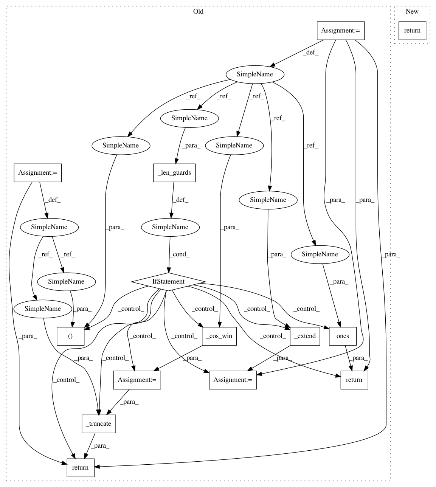

ddf48d712f2619228de9ed62eec747c8a4a690ca,scipy/signal/windows/windows.py,,flattop,#Any#Any#,566
Before Change
>>> plt.xlabel("Normalized frequency [cycles per sample]")
if _len_guards(M):
return np.ones(M)
M, needs_trunc = _extend(M, sym)
a = [0.21557895, 0.41663158, 0.277263158, 0.083578947, 0.006947368]
w = _cos_win(M, a)
return _truncate(w, needs_trunc)
def bartlett(M, sym=True):
r
After Change
a = [0.21557895, 0.41663158, 0.277263158, 0.083578947, 0.006947368]
return general_cosine(M, a, sym)
def bartlett(M, sym=True):
r
In pattern: SUPERPATTERN
Frequency: 3
Non-data size: 14
Instances
Project Name: scipy/scipy
Commit Name: ddf48d712f2619228de9ed62eec747c8a4a690ca
Time: 2018-03-16
Author: jordanh@shaw.ca
File Name: scipy/signal/windows/windows.py
Class Name:
Method Name: flattop
Project Name: scipy/scipy
Commit Name: ddf48d712f2619228de9ed62eec747c8a4a690ca
Time: 2018-03-16
Author: jordanh@shaw.ca
File Name: scipy/signal/windows/windows.py
Class Name:
Method Name: hann
Project Name: scipy/scipy
Commit Name: ddf48d712f2619228de9ed62eec747c8a4a690ca
Time: 2018-03-16
Author: jordanh@shaw.ca
File Name: scipy/signal/windows/windows.py
Class Name:
Method Name: hamming